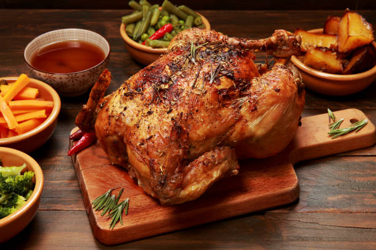

Baked Chicken Recipe

Description
This is the best baked chicken you can make and this is how you are
going to make it step by step
Ingrediants
- Full Sized Chicken
- Seasonings
- Olive Oil
- Butter
- Garlic
Steps
- Using a meat mallet or rolling pin, pound each chicken breast to
0.8-inch | 2cm at the thickest part. Make sure your fillets are all
the same thickness to ensure even cooking.
- Line a baking pan with aluminnium foil (or parchment/baking paper). Transfer
chicken to the pan and toss chicken in the seasoning. Drizzle with the oil and
rub seasoning all over to evenly coat.
- Bake chicken in preheated oven for 16-18 minutes, or until internal temperature is
165°F (75°C) using a meat thermometer. It should be golden with crisp edges.*
- Remove parchment paper. Broil (grill) on high heat during the last 2-3 minutes of
cooking until golden and crisp.
- Remove pan from oven, transfer chicken to serving plates and let rest for 5 minutes
before serving.